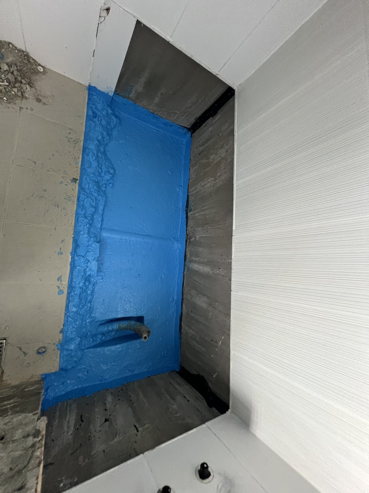
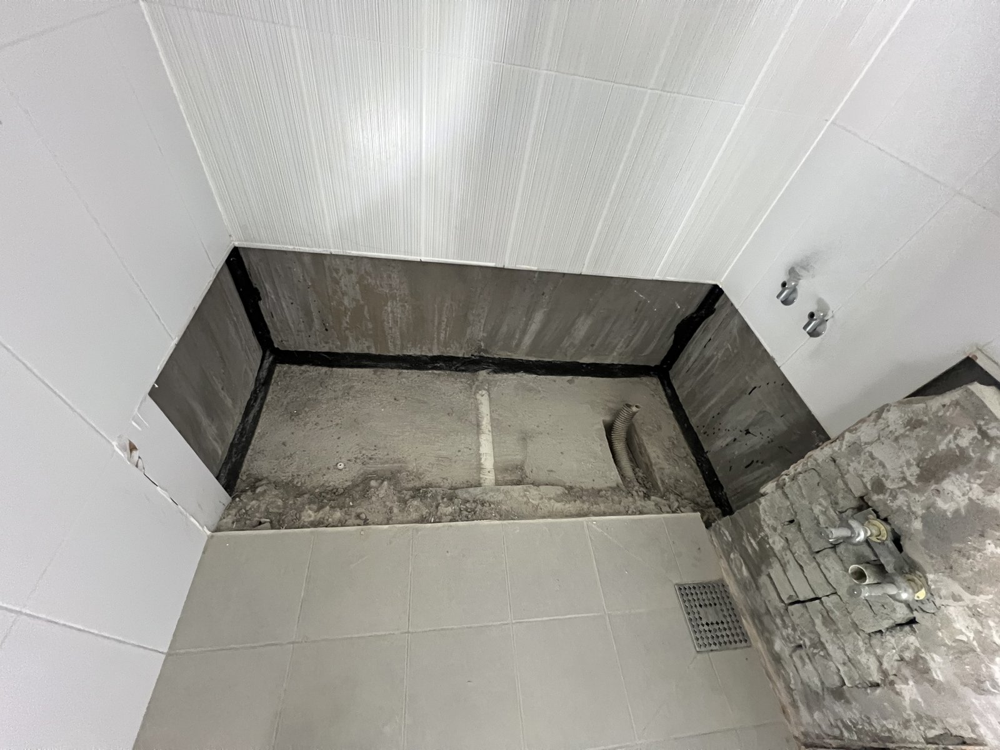
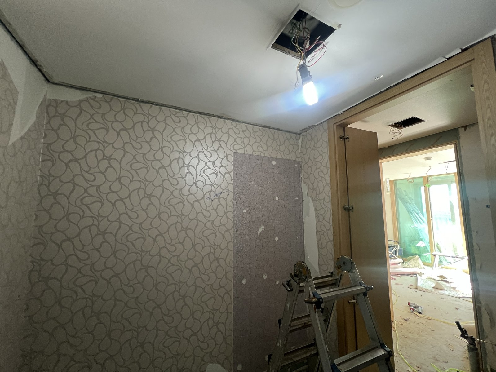
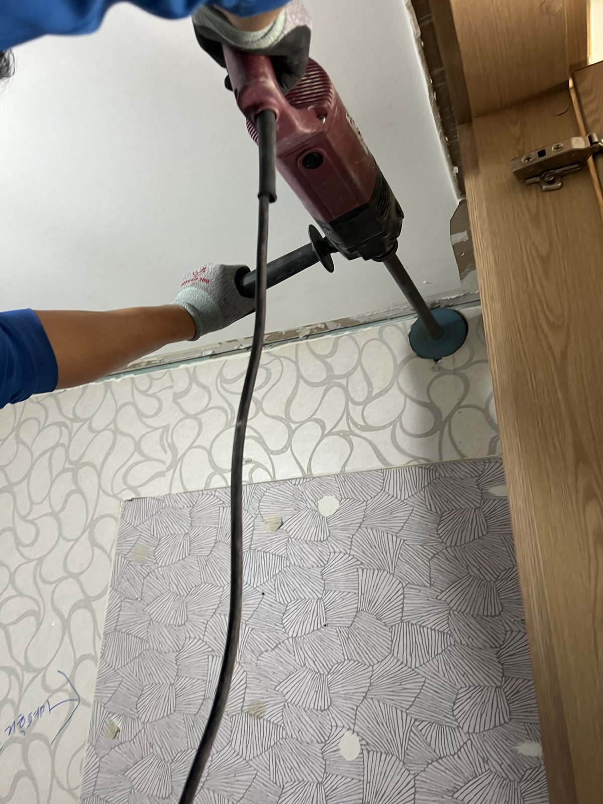
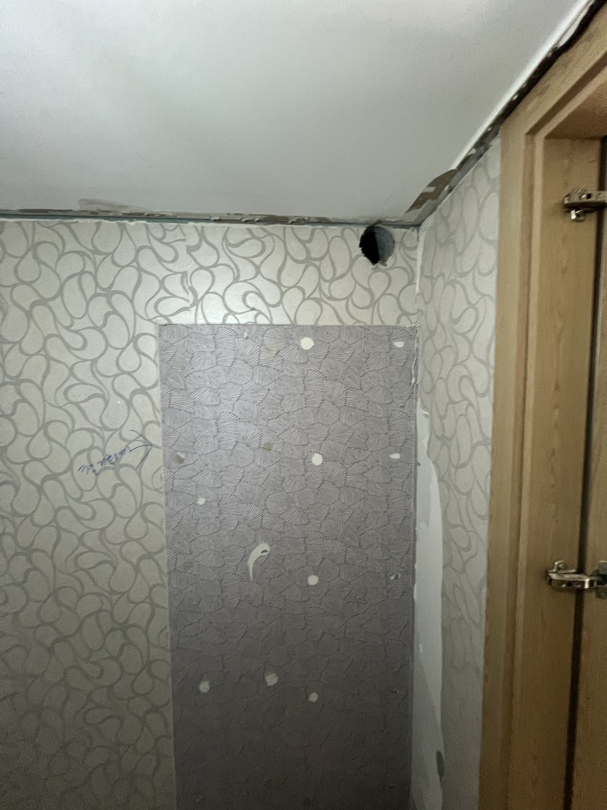
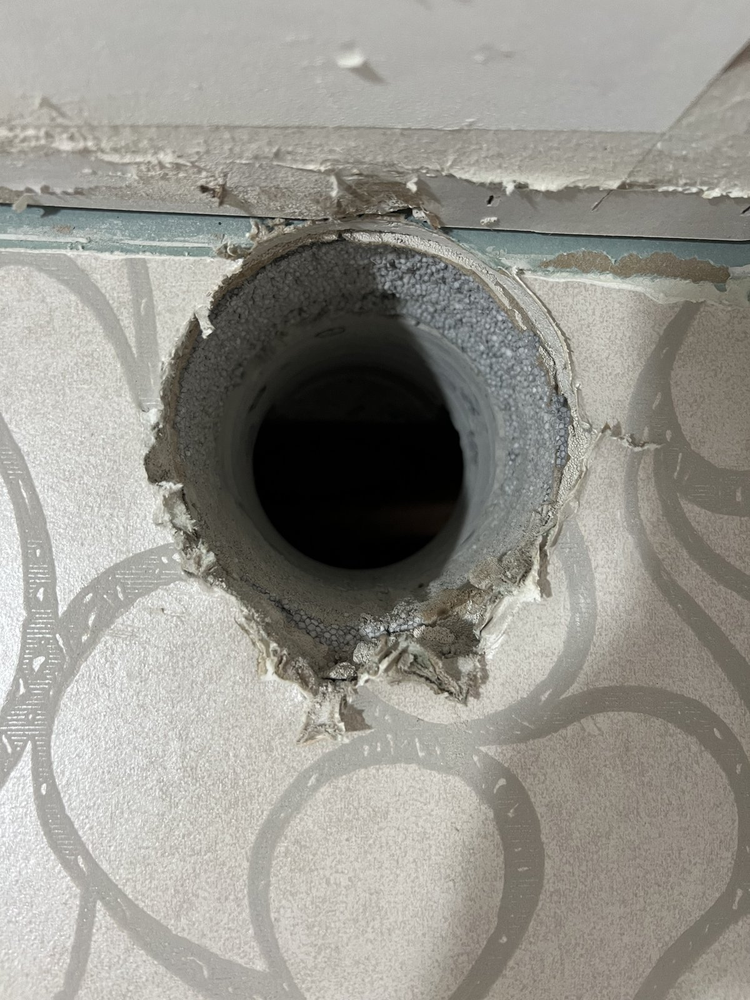

대전 죽동 예미지아파트 욕실 도막 방수·드레스룸 환기구 코어｜한 세대의 두 공정

작업 핵심
현장 작업 한눈에 보기
- 현장
- 대전 죽동 예미지아파트 · 욕실·드레스룸
- 문제
- 욕실 바닥 구간 방수
드레스룸 환기구 자리 - 작업
- 욕실 도막 방수·쓰지 않는 배관 끝 막음
드레스룸 벽 상단 환기구 코어 - 결과
- 도막면과 뚫은 구멍 사진 확인
담수시험·환풍기 설치는 미기재
대전 유성구 죽동 예미지아파트 세대에서 진행한 두 가지 작업입니다. 욕실 바닥 구간의 도막 방수와 드레스룸 벽 상단에 환기구 자리를 뚫는 코어 작업을 실제 사진 6장으로 소개합니다.
1. 도막 방수 전 욕실 바닥 구간
대전 유성구 죽동 예미지아파트 세대의 작업입니다. 먼저 욕실입니다.
타일을 걷어 낸 바닥 구간의 벽 하단을 따라 검은색 방수층이 둘러져 있고, 가운데 바닥면이 드러나 있습니다.

2. 파란색 도막 방수
바닥면에 파란색 도막을 입혀 벽 하단의 검은 층과 이어지게 했습니다. 쓰지 않는 배관 끝을 막는 작업도 함께 했습니다.
3. 드레스룸 — 환기구가 들어갈 벽
다음 날에는 드레스룸 작업을 했습니다. 천장 가까운 벽 상단에 환기구 자리를 내는 작업입니다.

4. 코어 드릴로 구멍 뚫기
코어 드릴로 벽 상단을 원형으로 뚫었습니다. 필요한 크기만큼 정확히 뚫어야 주변 마감 손상을 줄일 수 있습니다.

5. 뚫린 자리
벽 위쪽 모서리 가까이에 둥근 구멍이 났습니다.

6. 구멍 안쪽 확인
가까이서 보면 벽체를 관통한 원형 단면이 보입니다. 환풍기와 덕트 연결은 이 사진들에 없어 완료 공정에 넣지 않았습니다.

7. 확인한 범위와 상담 안내
이번 기록은 욕실 도막 방수와 드레스룸 환기구 코어 작업까지입니다. 담수시험 결과, 타일 마감, 환풍기 설치 여부는 자료가 없어 적지 않았습니다.
드레스룸·팬트리처럼 창이 없는 공간의 환기를 상담하실 때는 뚫을 벽 위치와 그 바깥쪽(복도·베란다 등)이 보이는 사진을 함께 보내 주세요.